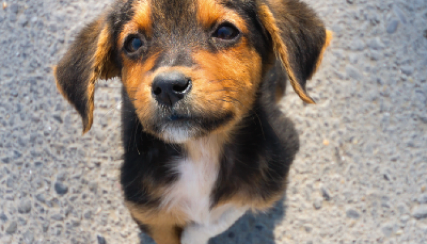
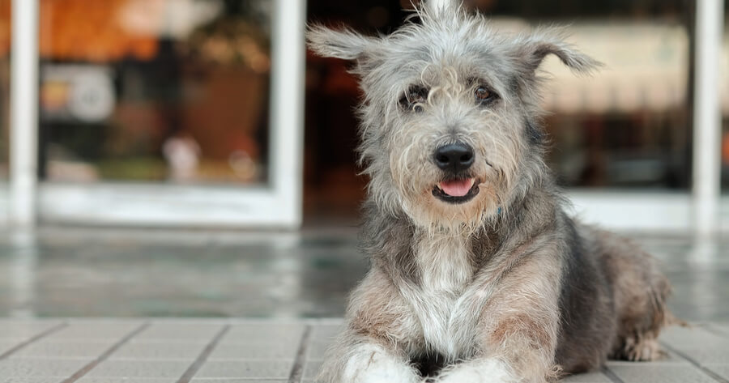

Perros en Adopcion
Bienvenido/a a nuestra sección de adopción de perritos. En nuestra ONG, trabajamos incansablemente para ayudar a los perros en situación de abandono y maltrato a encontrar un hogar amoroso y seguro. Creemos firmemente que todos los animales merecen una segunda oportunidad y estamos comprometidos con su bienestar y protección.
En esta sección, encontrarás una lista de los perritos disponibles para adopción. Todos ellos han recibido los cuidados necesarios, incluyendo atención veterinaria, alimentación adecuada, y mucho cariño por parte de nuestro equipo de voluntarios y profesionales. Todos nuestros perros están en perfecto estado de salud y han sido evaluados en cuanto a su temperamento y personalidad para garantizar su compatibilidad con posibles adoptantes.
Adoptar un perro es una decisión importante, pero también es una de las más gratificantes que puedes tomar. Al darle un hogar a uno de nuestros perritos, no solo le estás dando una oportunidad de tener una vida mejor, sino que también estás enriqueciendo tu propia vida con la compañía y amor de un animal fiel y cariñoso. ¡Gracias por considerar la adopción de uno de nuestros perritos!
Nuestros Perros en busqueda de Familia
 Bartolomeo
Bartolomeo
 Leo
 Kin